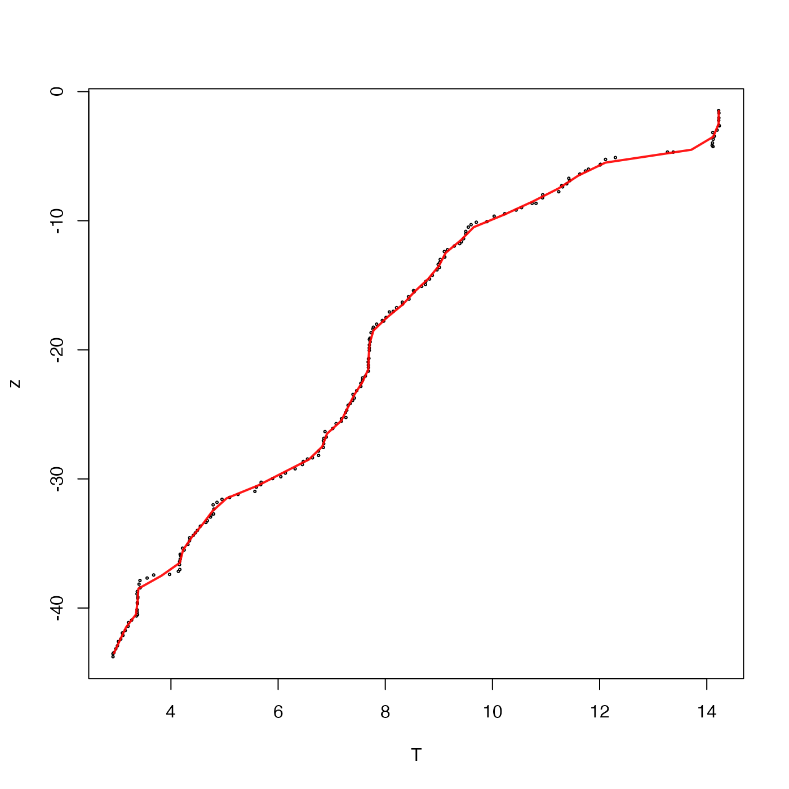

Average the values of a vector f in bins defined on another
vector x. The values are broken up into bins using cut().
Arguments
- x
vector of numerical values that will be categorized into bins via the
xbreaksparameter.- f
vector of numerical values that are associated with the
xvalues.- xbreaks
vector of values of
xat the boundaries between bins, calculated usingpretty()if not supplied.- include.lowest
logical value indicating whether to include
xvalues that equalxbreaks[1]. See “Details”.- na.rm
logical value indicating whether to remove NA values before doing the computation of the average. This is passed to
mean(), which does the work of the present function.
Value
A list with the following elements: the breaks (xbreaks,
midpoints (xmids) between those breaks,
the count (number) of x values between successive breaks,
and the resultant average (result) of f, classified by the
x breaks.
Details
By default, the sub-intervals defined by the xbreaks argument are open
on the left and closed on the right, to match the behaviour
of cut(). An open interval does not include points on
the boundary, and so any x values that exactly match
the first breaks value will not be counted. To include
such points in the calculation, set include.lowest to TRUE.
See also
Other bin-related functions:
binApply1D(),
binApply2D(),
binAverage(),
binCount1D(),
binCount2D(),
binMean2D()
Examples
# Plot raw temperature profile as circles, with lines indicating
# the result of averaging in 1-metre depth intervals.
library(oce)
data(ctd)
z <- ctd[["z"]]
T <- ctd[["temperature"]]
plot(T, z, cex = 0.3)
TT <- binMean1D(z, T, seq(-100, 0, 1))
lines(TT$result, TT$xmids, col = rgb(1, 0, 0, 0.9), lwd = 2)
